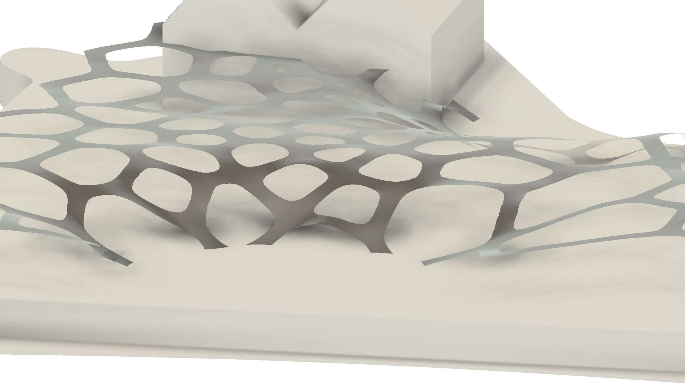
Hydro-Plantéa Atrium is a speculative architectural proposal that transforms the abandoned Thames Iron Works shipyard in East London into a living, energy-generating co-working space. The project centres on the design of a hydroponic biophotovoltaic (HBPV) cell — a device that combines hydroponic plant cultivation with microbial fuel-cell technology to harvest bioelectricity from root-associated cyanobacteria.
These cells are integrated into a parametrically designed rooftop structure that collects rainwater, generates electricity, and creates dappled shade patterns reminiscent of a natural tree canopy. The result is a self-sustaining architectural system that monitors biodiversity through bio-acoustic sensors powered by the energy it produces.
The brief.
01 / BRIEFThe project began with a provocation: how can we breathe new life into a historically significant, abandoned site while reimagining its role within the community?
The Thames Iron Works — built in 1837 and famous for constructing HMS Warrior, the world's first iron-hulled armoured warship — closed in 1912 and has since evolved into a habitat hosting over 180 plant species. Our challenge was to design a bio-integrated system for this site that generates energy, supports local ecology, and creates usable public space — all with minimal human maintenance.
Site analysis.
02 / SITESurrounded by water on three sides at the mouth of the River Lea, the Thames Iron Works sits within an area rich in arts, culture, and ecology — but underserved in workspace and community infrastructure. Field research confirmed that the site's few open cafés already function as informal offices and social hubs, pointing toward a clear opportunity for a green co-working programme.
Environmental analysis covered wind patterns, solar exposure, rainfall distribution, and the existing ecology of Bow Creek Ecology Park. These datasets directly informed the parametric rooftop geometry and cell distribution strategy.
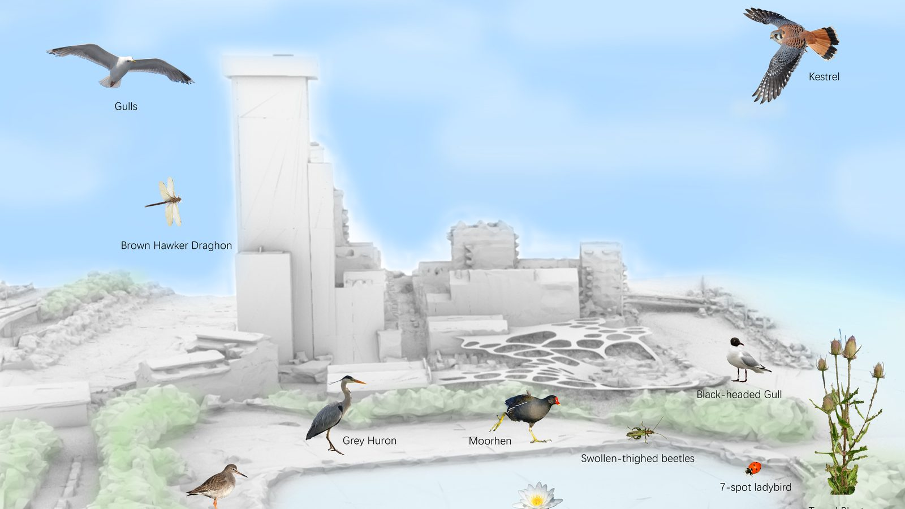
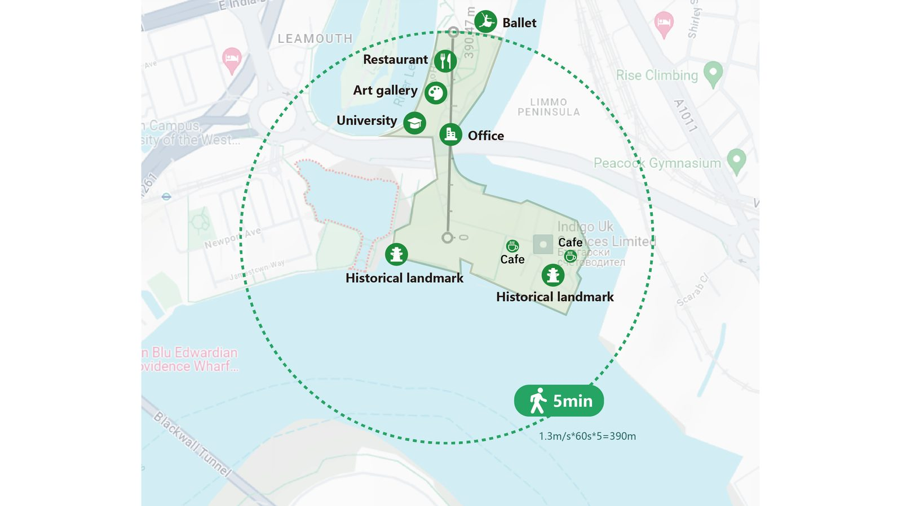
The HBPV cell.
03 / DEVICEThe core innovation is the Hydroponic Biophotovoltaic (HBPV) cell. Conventional BPV systems use organisms like moss to generate small amounts of electricity through photosynthesis. Our approach uses hydroponic plants whose root systems host cyanobacteria — microorganisms that release electrons as a metabolic byproduct — captured by an anode–cathode electrode system submerged in the nutrient solution.
The cell went through six major iterations, balancing electrical performance, plant health, fabrication feasibility, and structural integrity. Early versions explored organic, branching forms but proved too complex to fabricate reliably. The final design simplified the geometry while maximising electrode contact area and providing side-mounting brackets for maintenance access on the rooftop structure.
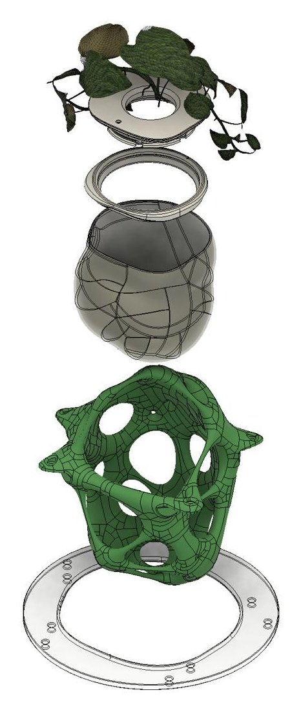
Prototyping & fabrication.
04 / MAKEPhysical prototyping combined CNC-machined aluminium moulds, 3D-printed components in PLA and TPU, and hand-fabricated elements. The cell container was CNC-scribed onto 2 mm aluminium sheet, cut with a jigsaw, and finished with lever shears. Electrode assemblies were integrated into 3D-printed housings designed for maximum microbial contact surface.
Material exploration extended to bacterial cellulose — grown in custom silicon moulds cast from 3D-printed positives — as a potential bio-compatible cell interior. Sheets were formed over TPU moulds and dried to create thin-walled containers, demonstrating a path toward fully bio-derived cell housings.
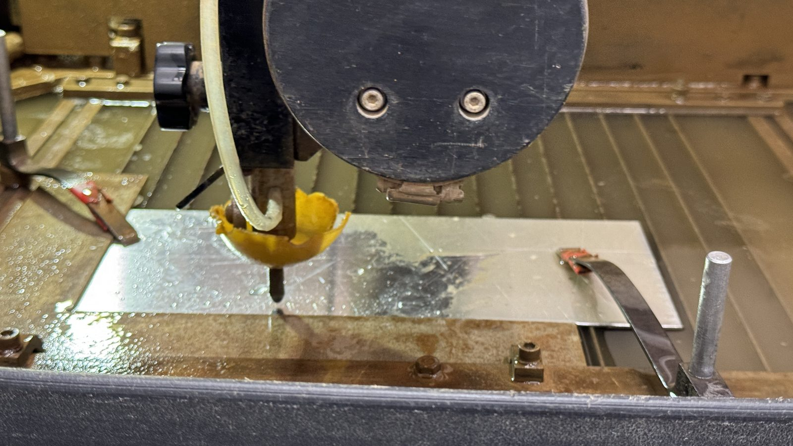
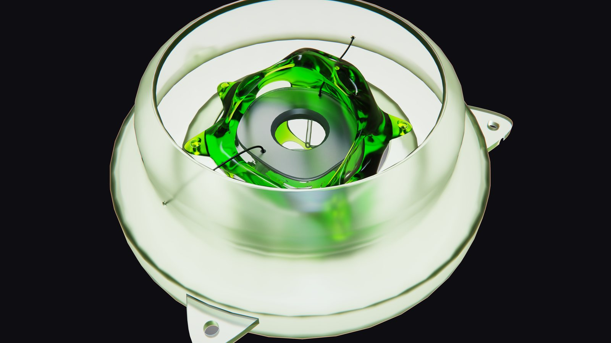
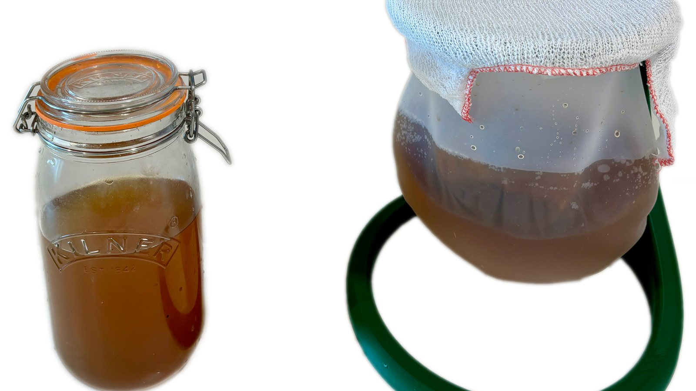
Electrical testing.
05 / TESTINGOpen-circuit potential (OCP) measurements were conducted across multiple plant species — Syngonium, Maranta, and Hedera — to characterise electrical output. Individual cells reached up to 50 mV, and three cells connected in series produced a peak of 136.7 mV. The design was evaluated across six criteria: computational design, device design, manufacturing difficulty, maintenance, functionality, and aesthetics.
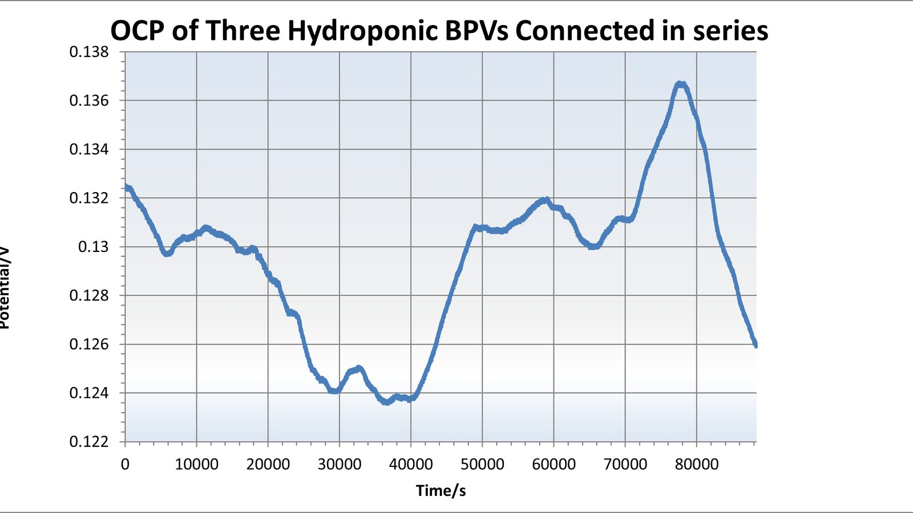
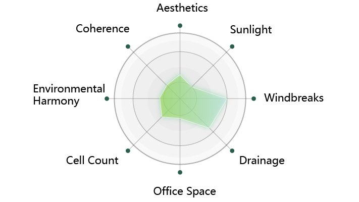
Parametric rooftop.
06 / STRUCTUREThe architectural centrepiece is a wave-like rooftop spanning the full 15,350 m² site, designed parametrically in Grasshopper. The undulating form was generated from environmental data — wind flow, solar angles, and rainfall patterns — creating varying canopy densities across the site. The organic geometry harmonises with the surrounding ecology while maximising rainwater collection across the surface.
The rooftop integrates HBPV cells in groups of 18 per tile (6 cells across 3 medium tiles), each cluster managed by a central column that houses electrical wiring, battery storage, nutrient distribution, and bio-acoustic sensors. Lifting mechanisms on each column allow tiles to be raised and lowered for maintenance access.
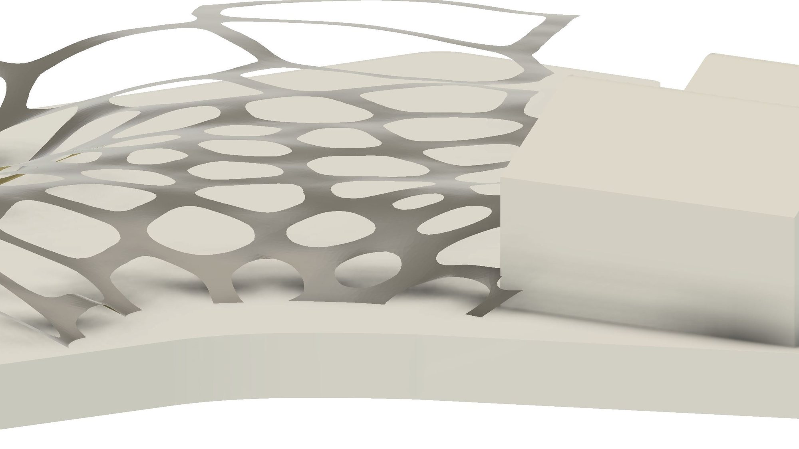
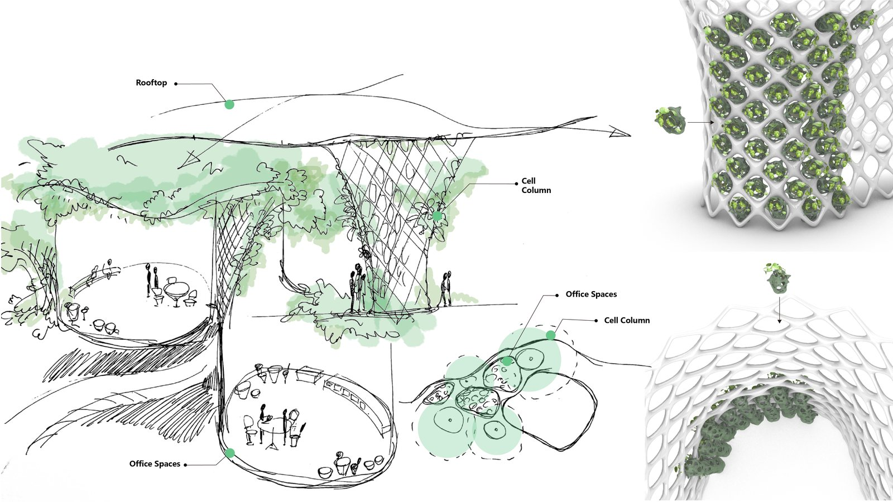
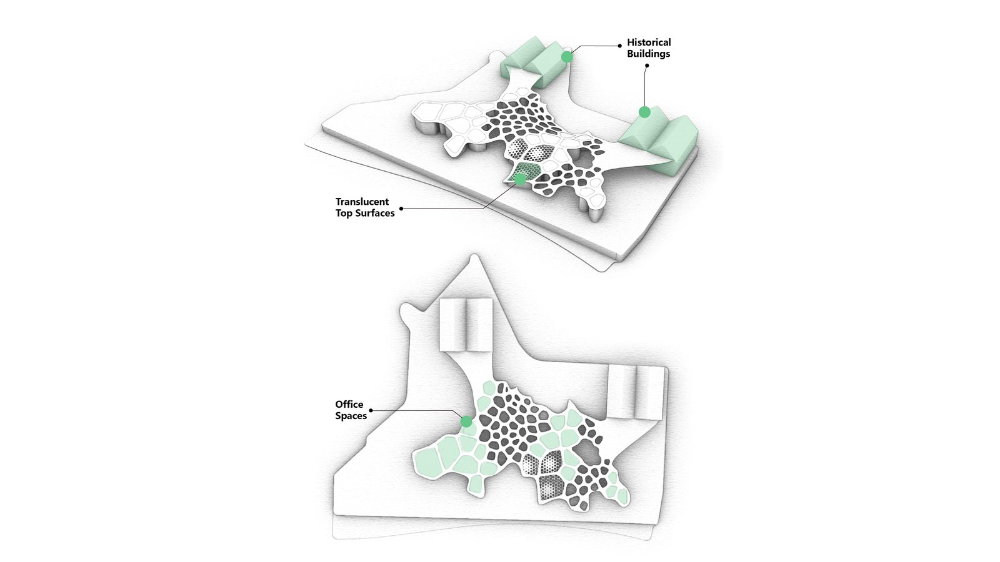
System integration.
07 / SYSTEMThe full system connects HBPV energy generation, rainwater harvesting, nutrient circulation, and biodiversity monitoring into a single autonomous loop. Rainwater collected by the rooftop surface feeds the hydroponic nutrient solution. Electricity generated by root bacteria powers bio-acoustic sensors positioned between cells to monitor local wildlife. The translucent cell containers create shifting light patterns below — imitating the dappled shade of a tree canopy for users in the co-working space underneath.
Grid structures designed in Grasshopper support the cells with varying mesh densities tuned to the external morphology of each plant species, refined through iterative testing for accommodating different growth patterns.
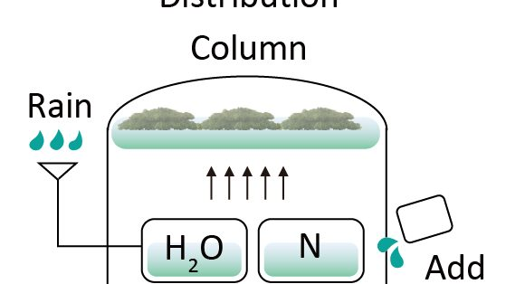
Architectural vision.
08 / VISIONThe programme transforms the abandoned shipyard into a green co-working space, responding directly to the area's shortage of workspace identified during field research. Indoor columns host more delicate plant species in protected HBPV arrays, while the rooftop canopy serves as both energy infrastructure and environmental shelter.
At night, the building glows along the Thames like a lantern — LED indicators embedded in the structure visualise plant health and energy-generation status, turning the architecture into a living data display visible from the surrounding neighbourhood.
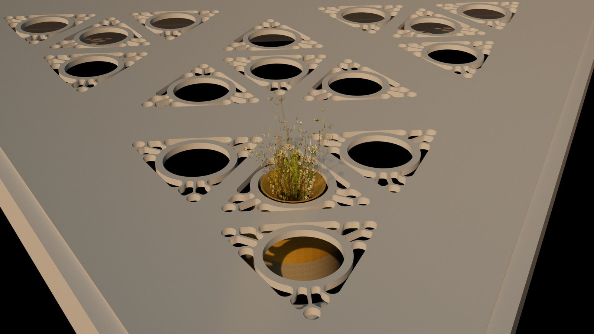

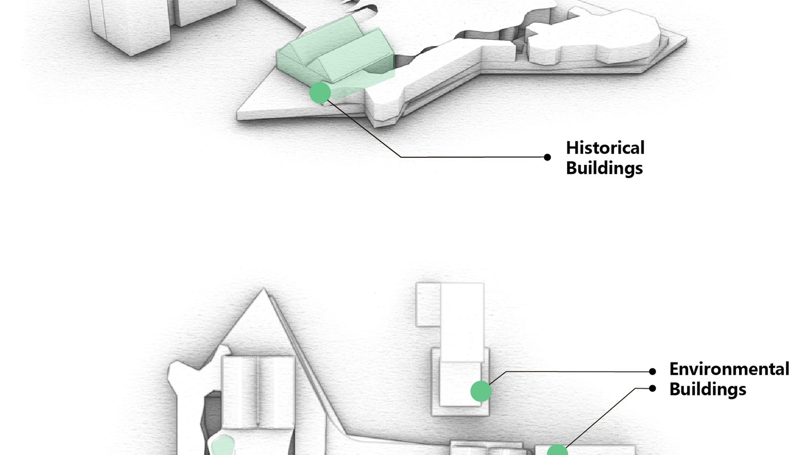
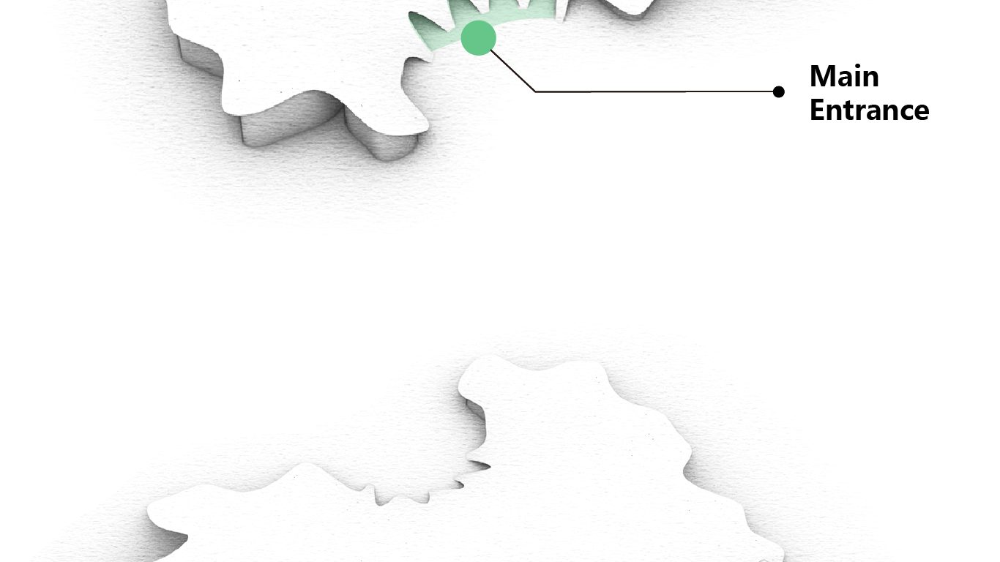
Environmental simulation.
09 / SIMULATIONRain, wind, and solar simulations validated the rooftop geometry. Rainfall analysis showed how the undulating surface channels water toward collection points, with geometric edges creating natural runoff trails. Wind simulations at varying directions confirmed the structure's stability and informed cell placement to minimise exposure damage. Solar analysis across different times of day mapped the canopy's shadow patterns to optimise both plant growth conditions and user comfort in the spaces below.
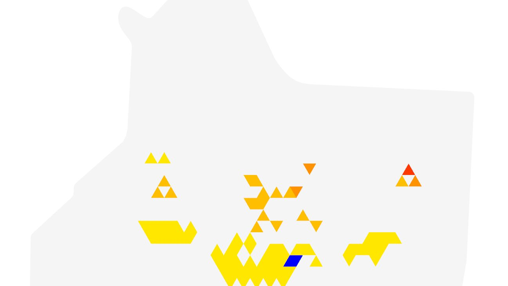
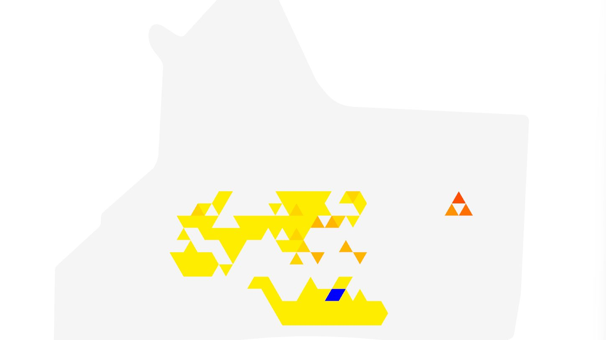
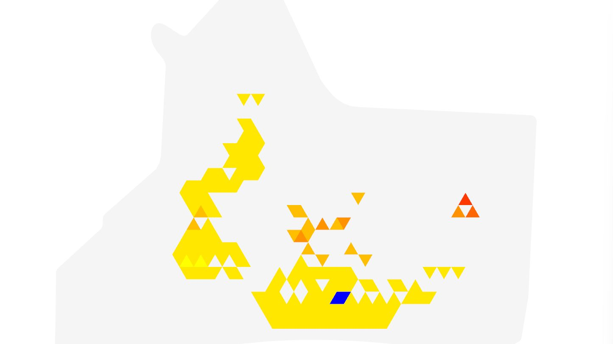
Hydro-Plantéa Atrium demonstrated that bio-integrated systems can be designed as architectural infrastructure — not just lab experiments. The HBPV cells, while producing modest voltage individually, validated a scalable approach when arrayed across a parametric structure. The project required constant negotiation between biological constraints (plant health, bacterial growth rates) and engineering requirements (electrode contact, fabrication tolerances, structural loads).
Key personal takeaways: parametric design workflows translate well from screen to fabrication when the constraints are embedded early; material experiments (like bacterial cellulose) need to run in parallel with the main design timeline to be useful; and cross-disciplinary teamwork works best when each person owns a clear vertical slice of the system.